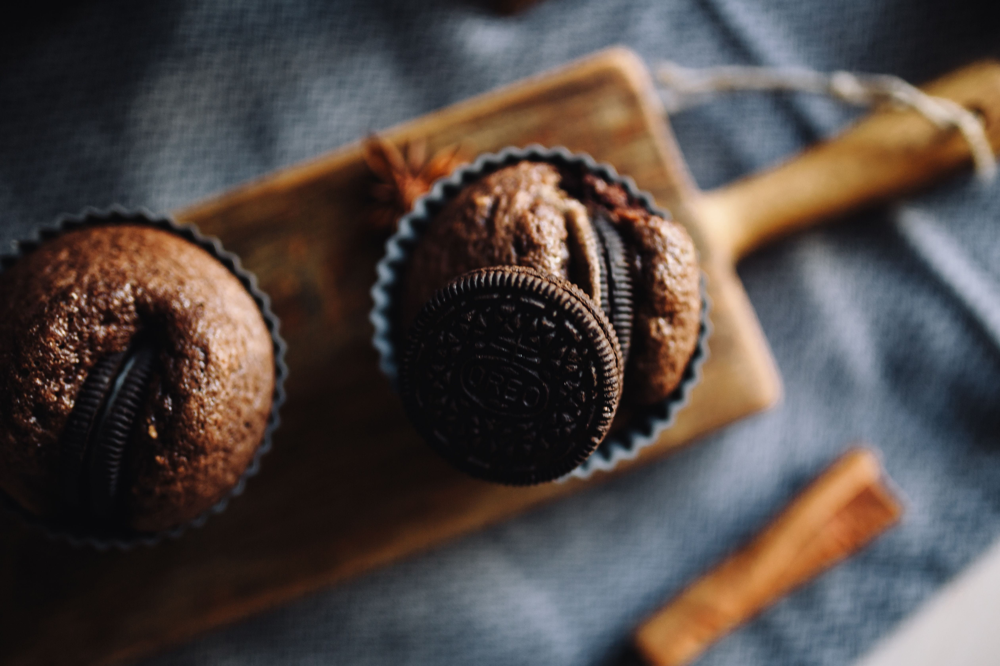

Pumpkin Oreo Cupcakes

Description
Pumpkin Oreo Cupcakes are the perfect fall treat — soft, spiced pumpkin cupcakes baked with crushed Oreos for a delightful crunch, topped with creamy Oreo-infused frosting. A cozy, chocolatey twist on your favorite autumn dessert!
Ingredients
- 1 cups all-purpose flour
- 2 large eggs
- ½ tsp baking soda
- 1 tsp pumpkin pie spice
- ½ tsp cinnamon
- ¾ cup pumpkin purée
- ½ cup vegetable oil
- ½ cup brown sugar
- 12 Oreo cookies
- 2 sticks unsalted butter
- 3 cups powdered sugar
- 2 tbsp milk or cream
Steps
- Prep: preheat oven to 175°C. Line a cupcake pan with liners and place one Oreo at the bottom of each.
- Mix: in one bowl, whisk dry ingredients. In another, mix wet ingredients. Combine until smooth.
- Bake: fill the liners and bake 20 minutes, then cool completely.
- Frost: beat butter, sugar, vanilla, and milk until fluffy. Fold in crushed Oreos.
- Decorate: pipe frosting on cupcakes and top with mini Oreos or crumbs.